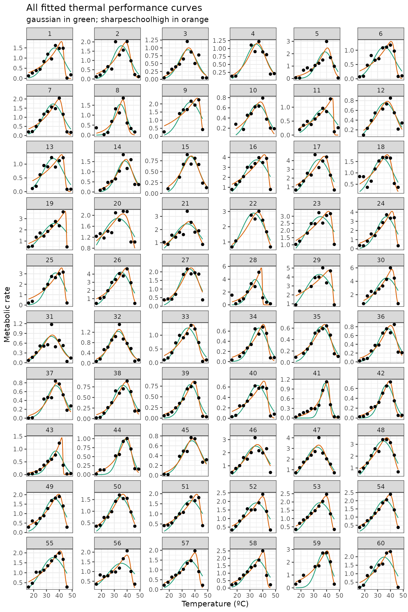

vignettes/fit_many_curves.Rmd
fit_many_curves.RmdIn the final part of the general pipeline, we demonstrate how multiple models can be fitted to multiple TPCs. Instead of picking all 24 model formulations to demonstrate this approach, we will use only 2 models in this example: gaussian_1987() and sharpeschoolhigh_1981().
We can demonstrate the fitting of multiple curves by modelling all 60
TPCs from the example dataset of rTPC curve from the
example dataset rTPC. These TPCs are of respiration and
photosynthesis of the aquatic algae, Chlorella vulgaris. These
algae differed in their growth temperature, growth_temp,
and how long they had been grown at that temperature,
process, either for ~100 or ~10 generations.
Using a similar approach to vignette('fit_many_models'),
models can be fitted to each curve using list columns and
purrr::map() to fit and store multiple models in a data
frame.
When fitting lots of models at once, it is useful to know the progress the code as it may take a long time to run.The R package purrr does now has progress bars built in; you can add a progress bar to the map() function using the argument .progress. However, when fitting multiple models with multiple map() calls a new progress bar each time, so currently I have not found a way to have a single progress bar for multiple map() calls, so we will keep with what we have at the moment.
# load in data
data("chlorella_tpc")
d <- chlorella_tpc
# when scaling up our code to fit hundreds of models, its nice to have a progress bar
# edit nls_multstart to allow for a progress bar
nls_multstart_progress <- function(formula, data = parent.frame(), iter, start_lower,
start_upper, supp_errors = c("Y", "N"), convergence_count = 100,
control, modelweights, ...){
if(!is.null(pb)){
pb$tick()
}
nls_multstart(formula = formula, data = data, iter = iter, start_lower = start_lower,
start_upper = start_upper, supp_errors = supp_errors, convergence_count = convergence_count,
control = control, modelweights = modelweights, ...)
}
# start progress bar and estimate time it will take
number_of_models <- 2
number_of_curves <- length(unique(d$curve_id))
# setup progress bar
pb <- progress::progress_bar$new(total = number_of_curves*number_of_models,
clear = FALSE,
format ="[:bar] :percent :elapsedfull")
# fit two chosen model formulation in rTPC
d_fits <- nest(d, data = c(temp, rate)) %>%
mutate(gaussian = map(data, ~nls_multstart_progress(rate~gaussian_1987(temp = temp, rmax,topt,a),
data = .x,
iter = c(3,3,3),
start_lower = get_start_vals(.x$temp, .x$rate, model_name = 'gaussian_1987') - 10,
start_upper = get_start_vals(.x$temp, .x$rate, model_name = 'gaussian_1987') + 10,
lower = get_lower_lims(.x$temp, .x$rate, model_name = 'gaussian_1987'),
upper = get_upper_lims(.x$temp, .x$rate, model_name = 'gaussian_1987'),
supp_errors = 'Y',
convergence_count = FALSE)),
sharpeschoolhigh = map(data, ~nls_multstart_progress(rate~sharpeschoolhigh_1981(temp = temp, r_tref,e,eh,th, tref = 15),
data = .x,
iter = c(3,3,3,3),
start_lower = get_start_vals(.x$temp, .x$rate, model_name = 'sharpeschoolhigh_1981') - 10,
start_upper = get_start_vals(.x$temp, .x$rate, model_name = 'sharpeschoolhigh_1981') + 10,
lower = get_lower_lims(.x$temp, .x$rate, model_name = 'sharpeschoolhigh_1981'),
upper = get_upper_lims(.x$temp, .x$rate, model_name = 'sharpeschoolhigh_1981'),
supp_errors = 'Y',
convergence_count = FALSE)))[=========================================================] 100% 00:00:40Like previous vignettes, the predictions of each model can be
estimated using broom::augment(). To do this, we first
create a new list column containing high resolution temperature values
by taking the min and max of each curve. Next
we stack the models and finally we get the new predictions using the
map2(), which allows us to use both fit
and new_data list columns. After unnesting the
preds column, we are then left with high resolution
predictions for each curve. As this code covers a lot of steps, each
line of the code is commented.
# create new list column of for high resolution data
d_preds <- mutate(d_fits, new_data = map(data, ~tibble(temp = seq(min(.x$temp), max(.x$temp), length.out = 100)))) %>%
# get rid of original data column
select(., -data) %>%
# stack models into a single column, with an id column for model_name
pivot_longer(., names_to = 'model_name', values_to = 'fit', c(gaussian,sharpeschoolhigh)) %>%
# create new list column containing the predictions
# this uses both fit and new_data list columns
mutate(preds = map2(fit, new_data, ~augment(.x, newdata = .y))) %>%
# select only the columns we want to keep
select(curve_id, growth_temp, process, flux, model_name, preds) %>%
# unlist the preds list column
unnest(preds)
glimpse(d_preds)
#> Rows: 12,000
#> Columns: 7
#> $ curve_id <dbl> 1, 1, 1, 1, 1, 1, 1, 1, 1, 1, 1, 1, 1, 1, 1, 1, 1, 1, 1, 1…
#> $ growth_temp <dbl> 20, 20, 20, 20, 20, 20, 20, 20, 20, 20, 20, 20, 20, 20, 20…
#> $ process <chr> "acclimation", "acclimation", "acclimation", "acclimation"…
#> $ flux <chr> "respiration", "respiration", "respiration", "respiration"…
#> $ model_name <chr> "gaussian", "gaussian", "gaussian", "gaussian", "gaussian"…
#> $ temp <dbl> 16.00000, 16.33333, 16.66667, 17.00000, 17.33333, 17.66667…
#> $ .fitted <dbl> 0.02790076, 0.03175769, 0.03607053, 0.04088150, 0.04623512…We can then plot the predictions of each curve using ggplot2.
# plot
ggplot(d_preds) +
geom_line(aes(temp, .fitted, col = model_name)) +
geom_point(aes(temp, rate), d) +
facet_wrap(~curve_id, scales = 'free_y', ncol = 6) +
theme_bw() +
theme(legend.position = 'none') +
scale_color_brewer(type = 'qual', palette = 2) +
labs(x = 'Temperature (ºC)',
y = 'Metabolic rate',
title = 'All fitted thermal performance curves',
subtitle = 'gaussian in green; sharpeschoolhigh in orange')
The traits of each thermal performance curve can also easily be calculated.
# stack models and calculate extra params
d_params <- pivot_longer(d_fits, names_to = 'model_name', values_to = 'fit', c(gaussian,sharpeschoolhigh)) %>%
mutate(params = map(fit, calc_params)) %>%
select(curve_id, growth_temp, process, flux, model_name, params) %>%
unnest(params)
glimpse(d_params)
#> Rows: 120
#> Columns: 16
#> $ curve_id <dbl> 1, 1, 2, 2, 3, 3, 4, 4, 5, 5, 6, 6, 7, 7, 8, 8, …
#> $ growth_temp <dbl> 20, 20, 20, 20, 23, 23, 27, 27, 27, 27, 30, 30, …
#> $ process <chr> "acclimation", "acclimation", "acclimation", "ac…
#> $ flux <chr> "respiration", "respiration", "respiration", "re…
#> $ model_name <chr> "gaussian", "sharpeschoolhigh", "gaussian", "sha…
#> $ rmax <dbl> 1.4972473, 1.8127063, 1.7935416, 1.9798352, 0.94…
#> $ topt <dbl> 36.338, 41.646, 35.554, 39.007, 34.615, 35.170, …
#> $ ctmin <dbl> 18.695, 2.539, 18.835, 6.086, 17.368, 11.970, 15…
#> $ ctmax <dbl> 53.981, 45.558, 52.272, 47.680, 51.861, 53.064, …
#> $ e <dbl> 0.6758954, 0.5802496, 0.8427748, 0.6621701, 1.02…
#> $ eh <dbl> 1.0767824, 11.4840311, 1.0954099, 2.4774826, 1.1…
#> $ q10 <dbl> 2.373766, 2.063147, 2.927011, 2.305129, 3.722119…
#> $ thermal_safety_margin <dbl> 17.643, 3.912, 16.718, 8.673, 17.246, 17.894, 18…
#> $ thermal_tolerance <dbl> 35.286, 43.019, 33.437, 41.594, 34.493, 41.094, …
#> $ breadth <dbl> 9.651, 5.371, 9.165, 6.495, 9.442, 7.714, 10.354…
#> $ skewness <dbl> -4.008871e-01, -1.090378e+01, -2.526351e-01, -1.…